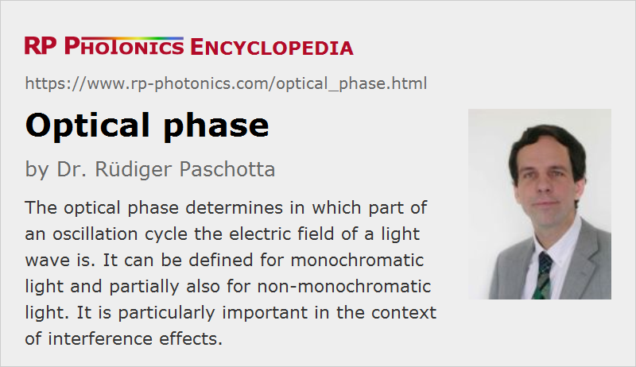

Optical Phase
Definition: the phase of the electric field of an optical wave, usually considered in the time domain
German: optische Phase
Categories: general optics, physical foundations
How to cite the article; suggest additional literature
Author: Dr. Rüdiger Paschotta
Optical radiation is associated with electromagnetic waves, and as other waves those can be characterized with an amplitude and a phase. The phase determines in which part of an oscillation cycle the electric field is. (For a plane wave propagating in free space, the electric and magnetic field are in phase, i.e., their phase values are identical.) The phase advances by 2 π per oscillation cycle, which means (for optical waves) substantial phase changes within a single femtosecond. The temporal derivative of the phase determines the instantaneous frequency.
When an optical wave can be described with a phasor (i.e., a complex amplitude), the optical phase can be associated with the complex phase. For example, a plane wave propagating in z direction can be described with a phasor A exp(i (k z − ω t)), where the optical phase is arg(A) + k z − ω t.
A high temporal coherence essentially means that the optical phase involves systematically and predictably in time. Similarly, spatial coherence is related to the correlation between phases at different points in space. Ideally (i.e., for light with perfect spatial coherence), one has well-defined phase fronts, i.e., surfaces connecting points with equal optical phase.
When light propagates through a transparent medium, its optical phase is delayed in proportion to the propagation distance. The proportionality factor is called the phase constant (or wavenumber), which is the imaginary part of the propagation constant and is related to the refractive index. Due to the high optical frequencies, substantial optical phase delays occur already within propagation distances well below a micrometer.
The essential function of various optical elements is to apply a spatially dependent (but time-independent) optical phase changes (phase shifts) to a light beam. For example, spherical lenses apply phase changes which are approximately proportional to the square of the distance from the lens axis. Deviations from the ideal radial dependence for imaging applications are called spherical aberrations. Diffraction gratings generate phase shifts proportional to a spatial coordinate (implying a change of propagation direction), which also depend on the optical frequency. Waveplates produce phase changes which are polarization-dependent.
For applying well-controlled time-dependent phase changes to laser beams – even including very fast phase modulations – one can use phase modulators.
Due to nonlinearities of optical media, one wave can affect the optical phase of another wave when they overlap in space and time; this effect is called cross-phase modulation. Also, each beam can modify its own phase (self-phase modulation).
Many phenomena in optics and photonics are dependent on optical phases or phase differences. Some examples:
- The phase profile of a light beam is essential for its further propagation in space. For example, curved wavefronts are associated with divergence or convergence of a beam.
- Interference effects strongly depend on optical phases – find more details below.
- Resonance phenomena – e.g. in the context of optical resonators – are associated with round-trip phase shifts which are an integer multiple of 2 π.
- For efficiently coupling light into an optical resonator one requires mode matching. Essentially, that means that the phase fronts of the incident light match those of a resonator mode.
- Some nonlinear processes can be efficient only if the phase matching is achieved. Essentially, that means that the relative phases of involved optical waves do not change too much during propagation through a nonlinear medium.
- The linewidth of a laser is determined by fluctuations of the optical phase of its output beam.
For optical pulses, one sometimes specifies a timing phase related to timing jitter; this should not be confused with fluctuations of the optical phase.
Phase of Non-Monochromatic Light
The optical phase is clearly defined for quasi-monochromatic waves, but not for waves with very complicated oscillation patterns. For example, it is not clear how to define the optical phase of broadband light generated as thermal radiation (e.g. light from a incandescent lamp or sunlight).
Further, the optical phase may have a complicated dependence on the position in a light beam; in a multimode beam, one may have a different phase evolution for each mode. Laser beams, on the other hand, are often close to diffraction-limited, which implies that there is a nearly perfect phase correlation across the whole beam profile.
On the other hand, ultrashort pulses from mode-locked lasers usually have a clearly defined optical phase, even if they are very broadband. Normally, the phase is well reproducible from pulse to pulse; a consequence of that is that the optical spectrum of such a pulse train consists of discrete lines (→ frequency combs). A systematic phase change from pulse to pulse, measured relative to the pulse envelope, is called the carrier–envelope offset phase. High spatial coherence is normally also obtained.
Phase in Time and Frequency Domain
Usually, optical phases are considered in the time domain. However, one also consider the phases of optical frequency components, i.e., the optical phase in the frequency domain; that is called the spectral phase. A constant phase change in the time domain corresponds to the same phase change in the frequency domain. A time delay e.g. of an ultrashort pulse is associated with a change of spectral phase which is 2 π times the frequency times the time delay. In general, modulations of the phase in the time domain lead to a modified optical spectrum, and not just related phase changes in the frequency domain.
Phase Differences in Interference Effects
Due to the very high optical frequencies, it is difficult to directly measure optical phases. However, phase differences are often relevant in the context of interference effects, and those may evolve relatively slowly if the involved waves have similar frequencies. For example, one can obtain an optical beat note when superimposing two quasi-monochromatic laser beams with similar optical frequencies; one may then measure the beat frequency (e.g. in the megahertz or gigahertz region) with a sufficiently fast photodetector. Any phase deviation of one of the involved optical beams is directly translated into a phase deviation of the obtained beat signal.
In an interferometer, one often compares the phases of two beams which have been derived from the same laser beam, but where only one of the beams has been affected by a phase change. One can precisely measure tiny phase differences by converting them into intensity changes of the superimposed beams.
The measurement of optical phase and frequency differences – usually based on beat notes – is a crucial element of optical metrology. Particularly with frequency combs (generated with mode-locked lasers), it is nowadays possible to precisely compare optical frequencies, even if they are too far apart for directly measuring beat notes. Also, precise comparisons with microwave frequencies (e.g. from atomic clocks) are possible, where one can virtually avoid any phase slips, i.e., register and compare those oscillations with a phase accuracy of milliradians or less.
Phase Noise
The optical phase e.g. of a laser beam is always subject to some level of phase noise, e.g. due to spontaneous emission in the laser gain medium or to length changes in the laser resonator. Therefore, a beat note between two single-frequency lasers is not a perfectly monochromatic signal, but also exhibits some level of phase noise. In fact, the phase noise of lasers is often measured by recording such beat notes.
See the article on phase noise for more details.
Questions and Comments from Users
Here you can submit questions and comments. As far as they get accepted by the author, they will appear above this paragraph together with the author’s answer. The author will decide on acceptance based on certain criteria. Essentially, the issue must be of sufficiently broad interest.
Please do not enter personal data here; we would otherwise delete it soon. (See also our privacy declaration.) If you wish to receive personal feedback or consultancy from the author, please contact him e.g. via e-mail.
By submitting the information, you give your consent to the potential publication of your inputs on our website according to our rules. (If you later retract your consent, we will delete those inputs.) As your inputs are first reviewed by the author, they may be published with some delay.
See also: wavefronts, spectral phase, phase noise, phase velocity, coherence, optical intensity, phase matching, mode matching, instantaneous frequency, interference, timing phase
and other articles in the categories general optics, physical foundations
|  |
If you like this page, please share the link with your friends and colleagues, e.g. via social media:
These sharing buttons are implemented in a privacy-friendly way!